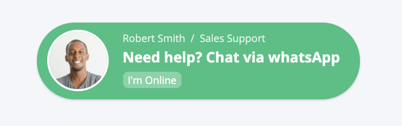
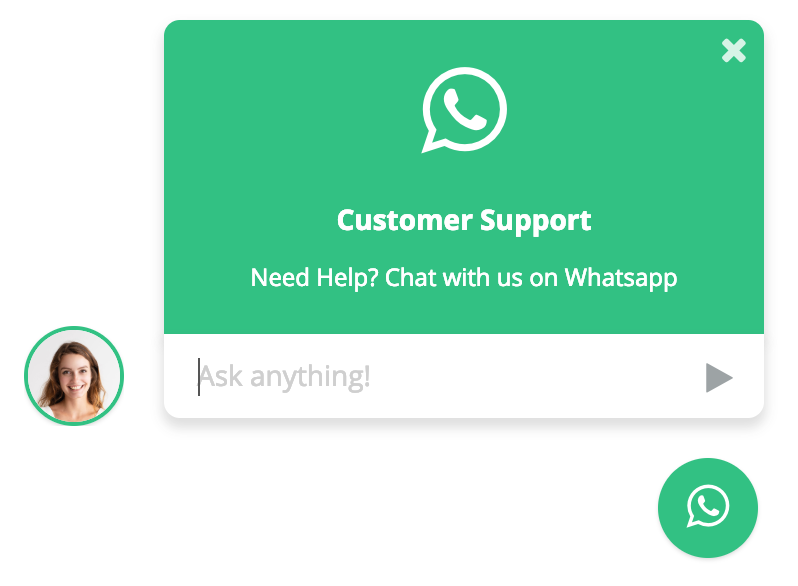
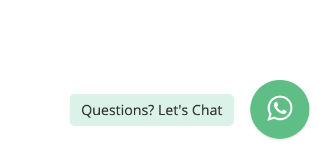

Thank you for purchasing this plugin.
If you have any questions that are beyond the scope of this help file, please feel free to email via my user page contact form
here.
WhatsApp Chat Support by Kevin Kenfack
Here are the steps to include this plugin in your existing page/theme:
- First include the CSS and JS files in your page, as shown here
- Then pick one of the buttons found here and copy/paste the HTML into your page
- Finally initialize the plugin with Javascript, copy the code from here, the code would go at the bottom of your page (after the JS files of the plugin and the HTML of your button)
Including files
These are all the files you need to import in your page so the plugin can work.
<!-- Style of the plugin --> <link rel="stylesheet" href="plugin/whatsapp-chat-support.css"> <!-- jQuery 1.8+ --> <script src="plugin/components/jQuery/jquery-1.11.3.min.js"></script> <!-- Plugin JS file --> <script src="plugin/components/moment/moment.min.js"></script> <script src="plugin/components/moment/moment-timezone-with-data.min.js"></script> <!-- spanish language (es) --> <script src="plugin/whatsapp-chat-support.js"></script>
It’s not required, but I recommend placing the CSS files in <head> and the JavaScript files and initialization code in the footer of your site (before the closing </body> tag). Also if you already have jquery.js on your site, don’t include it a second time.
HTML | Inline Button
This would be the HTML for an inline button, which you can drop next to your existing HTML
<div class="whatsapp_chat_support" id="example">
<div
class="wcs_button wcs_button_person"
data-number="237671262483"
data-availability='{ "monday":"08:30-18:30", "tuesday":"08:30-18:30", "wednesday":"08:30-18:30", "thursday":"08:30-18:30", "friday":"08:30-18:30" }'
>
<div class="wcs_button_person_img"><img src="img/person_7.jpg" alt=""></div>
<div class="wcs_button_person_content">
<div class="wcs_button_person_name">Robert Smith / Sales Support</div>
<div class="wcs_button_person_description">Need help? Chat via whatsApp</div>
<div class="wcs_button_person_status">I'm Online</div>
</div>
</div>
</div>
Notice where you specify the phone number and the availability. If you don't specify the data-availability attribute then the plugin will always show it available!

HTML | Fixed Button With Popup for a Single Account
This would be the HTML for an inline button, which you can drop next to your existing HTML
<div class="whatsapp_chat_support wcs_fixed_right" id="example_3">
<div class="wcs_button_label">
Questions? Let's Chat
</div>
<div class="wcs_button wcs_button_circle">
<span class="fa fa-whatsapp"></span>
</div>
<div class="wcs_popup">
<div class="wcs_popup_close">
<span class="fa fa-close"></span>
</div>
<div class="wcs_popup_header">
<span class="fa fa-whatsapp"></span>
<strong>Customer Support</strong>
<div class="wcs_popup_header_description">Need Help? Chat with us on Whatsapp</div>
</div>
<div
class="wcs_popup_input"
data-number="237671262483"
data-availability='{ "monday":"08:30-18:30", "tuesday":"08:30-18:30", "wednesday":"08:30-18:30", "thursday":"08:30-18:30", "friday":"08:30-18:30" }'
>
<input type="text" placeholder="Ask anything!" />
<i class="fa fa-play"></i>
</div>
<div class="wcs_popup_avatar">
<img src="img/person_5.jpg" alt="">
</div>
</div>
</div>
Notice where you specify the phone number and the availability. If you don't specify the data-availability attribute then the plugin will always show it available!

HTML | Fixed Button With Popup for Multiple Accounts
If you want a fixed button with multiple accounts this is the HTML you would need
<div class="whatsapp_chat_support wcs_fixed_right" id="example">
<div class="wcs_button_label">
Questions? Let's Chat
</div>
<div class="wcs_button wcs_button_circle">
<span class="fa fa-whatsapp"></span>
</div>
<div class="wcs_popup">
<div class="wcs_popup_close">
<span class="fa fa-close"></span>
</div>
<div class="wcs_popup_header">
<strong>Need Help? Chat with us</strong>
<br>
<div class="wcs_popup_header_description">Click one of our representatives below</div>
</div>
<div class="wcs_popup_person_container">
<div
class="wcs_popup_person"
data-number="237671262483"
data-availability='{ "monday":"08:30-18:30", "tuesday":"08:30-18:30", "wednesday":"08:30-18:30", "thursday":"08:30-18:30", "friday":"08:30-18:30" }'
>
<div class="wcs_popup_person_img"><img src="img/person_5.jpg" alt=""></div>
<div class="wcs_popup_person_content">
<div class="wcs_popup_person_name">Mia Smith</div>
<div class="wcs_popup_person_description">Sales Support</div>
<div class="wcs_popup_person_status">I'm Online</div>
</div>
</div>
<div
class="wcs_popup_person"
data-number="237671262483"
data-availability='{ "monday":"08:30-18:30", "tuesday":"08:30-18:30", "wednesday":"08:30-18:30", "thursday":"08:30-18:30", "friday":"08:30-18:30" }'
>
<div class="wcs_popup_person_img"><img src="img/person_6.jpg" alt=""></div>
<div class="wcs_popup_person_content">
<div class="wcs_popup_person_name">James Brown</div>
<div class="wcs_popup_person_description">Customer Support</div>
<div class="wcs_popup_person_status">I'm Online</div>
</div>
</div>
<div
class="wcs_popup_person"
data-number="237671262483"
data-availability='{ "monday":"08:30-18:30", "tuesday":"08:30-18:30", "wednesday":"08:30-18:30", "thursday":"08:30-18:30", "friday":"08:30-18:30" }'
>
<div class="wcs_popup_person_img"><img src="img/person_7.jpg" alt=""></div>
<div class="wcs_popup_person_content">
<div class="wcs_popup_person_name">Robert Miller</div>
<div class="wcs_popup_person_description">Techincal Support</div>
<div class="wcs_popup_person_status">I'm Online</div>
</div>
</div>
</div>
</div>
</div>
Notice where you specify the phone number and the availability. If you don't specify the data-availability attribute then the plugin will always show it available!

HTML | Fixed Button Without popup (button only)
If you want a fixed button without popup this is the HTML you would need
<div class="whatsapp_chat_support wcs_fixed_right" id="example">
<div class="wcs_button_label">
Questions? Let's Chat
</div>
<div class="wcs_button wcs_button_circle">
<span class="fa fa-whatsapp"></span>
</div>
</div>
Notice where you specify the phone number and the availability. If you don't specify the data-availability attribute then the plugin will always show it available!

Initialization
Once you got the HTML markup in your site you need to initialize the plugin in Javascript.
You need to take the id from the "whatsapp_chat_support" div (In the example above would be: id="example") and use it for the initialization.
<script>
$('#example_1').whatsappChatSupport();
</script>
And here is where you can pass the JS options available. For example:
<script>
$('#example_3').whatsappChatSupport({
defaultMsg : '',
});
</script>
You can see the options available here
Options
Here you can see the JS options available for the plugin.
| Option | Type | Default | Description |
|---|---|---|---|
popupFx |
string | 1 | The popup effect from 0 till 14 |
now |
string | When empty it will use the date and time from the user browser if not you can assign it with PHP maybe (which will be the date of the server) format: YYYY-MM-DD HH:mm:ss (2019-12-30 18:30:00) | |
timezone |
string | America/Chicago | When using the date and time from the user browser you can transform it to your current timezone (in case your user is in a different timezone) |
notAvailableMsg |
string | I am not available today | Message when its not an available day or once the available hours have passed |
almostAvailableMsg |
string | I will be available soon | If today is an available day and before the time starts |
dialogNotAvailableMsg |
string | I am not available today | In the dialog, there will be a message when its not an available day or once the available hours have passed |
dialogAlmostAvailableMsg |
string | I will be available soon | In the dialog if today is an available day and before the time starts |
defaultMsg |
string | Hi, I have some questions about this page: {{url}}! | Default support message |
|
EVENTS
|
|||
onPopupOpen |
function | function(){} | This event is triggered when the modal opens. |
onPopupClose |
function | function(){} | This event is triggered when the modal closes. |
whenGoingToWhatsApp |
function | function(number, text){} | This event is triggered when the plugin redirects you to WhatsApp. |
You can pass the JS options to the whatsappChatSupport JS function like this (these are the default values)
<script>
$('#example').whatsappChatSupport({
// Options
popupFx : '1', // The popup effect from 0 till 14
now : '', // When empty it will use the date and time from the user browser if not you can assign it with PHP maybe (which will be the date of the server) format: YYYY-MM-DD HH:mm:ss (2019-12-30 18:30:00)
timezone : 'America/Chicago', // When using the date and time from the user browser you can transform it to your current timezone (in case your user is in a different timezone)
notAvailableMsg : 'I am not available today', // message when its not an available day or once the available hours have passed
almostAvailableMsg : 'I will be available soon', // if today is an available day and before the time starts
dialogNotAvailableMsg : 'I am not available today', // message when its not an available day or once the available hours have passed
dialogAlmostAvailableMsg : 'I will be available soon', // if today is an available day and before the time starts
defaultMsg : 'Hi, I have some questions about this page: {{url}}!', // default support msg
// Events
onPopupOpen : function(){},
onPopupClose : function(){},
whenGoingToWhatsApp : function(number, text){},
});
</script>